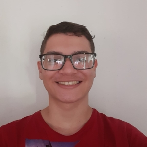

17 anos, solteiro, natural de Franca/SP

Qualquer um que nunca tenha cometido um erro nunca tentou algo novo.
Albert Einstein
Sou um brasileiro estudante de Desenvolvimento de Software Multiplataforma pela Fatec Franca, com sonhos em mente, como viajar para outros países e trabalhar na área de TI, pois sempre gostei e me interessei muito por tecnologia.
Estou trabalhando como jovem aprendiz no Magazine Luiza, na área do Centro de Distribuição 038, sendo o meu primeiro emprego. Sou solteiro e já fiz cursos de informática, que serviram como uma base para a faculdade.